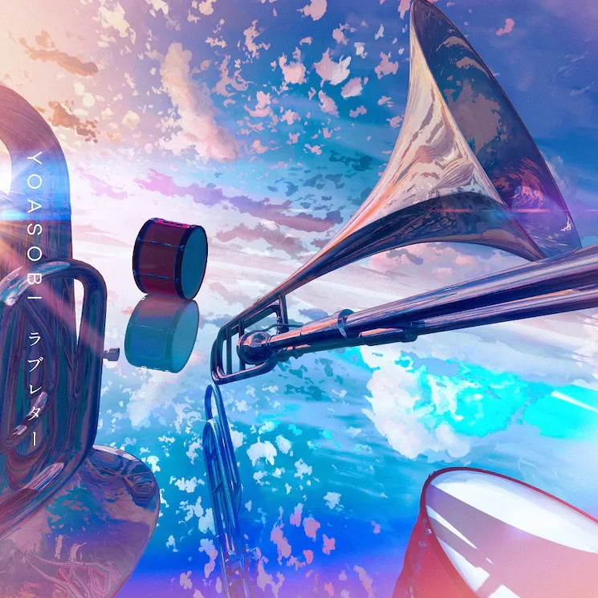

NEWS
2021.8.2

신곡 '러브레터'가 8월 9일 디지털 싱글로 발매되는 것이 발표되었다. 라디오 방송 'SUNDAY'S POST'와의 공동기획 '레터 송 프로젝트'를
통해 만들어진 곡으로, 청취자의 편지를 바탕으로 만들어졌다. 원작으로 당선된 편지는 당시 초등학교 6학년이었던 하츠네(はつね)의 음악에 대한 감사를 담은 편지. 레코딩에는 유니클로
콜라보 라이브에서 함께했던 오사카 토인 고교 취주악부 학생들이 참여했다.
2021.6.25

삼원색의 음원을 7월 2일 발매하는 것이 발표되었다. 음원 발매에 맞추어 같은 날 콜라보레이션 티셔츠 판매를 개시하는 유니클로에서 요아소비 티셔츠를
구매하는 고객에게 원작 〈RGB〉의 프롤로그 만화 〈Prologue to RGB〉 책자를 배포한다. 또한 같은 날에는 데뷔곡인 밤을 달리다의 영어 버전 음원 'Into The
Night' 역시 발매된다.
2021.6.14

유니클로와의 콜라보레이션으로 7월 2일부터 UT 티셔츠가 발매된다는 것이 공개되었다. 밤을 달리다, 봄망초, 아마도, 군청, 하루카, 앙코르, 삼원색
7곡을 이미지로 삼은 디자인으로 여성용 사이즈의 성인용 7종, 아동용 5종이 발매된다. 해외 스토어에서도 발매될 예정이지만 국내 유니클로 스토어에서는 구매할 수 없다.